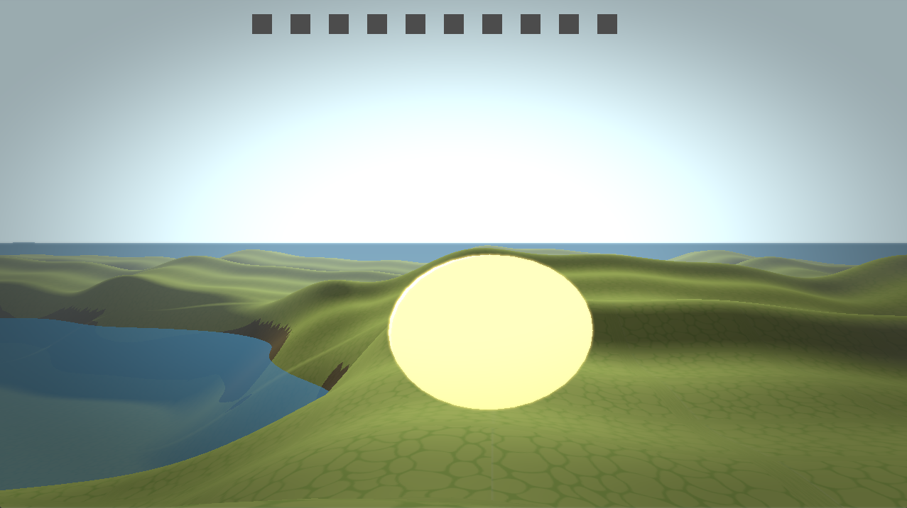

Island Explorer – Procedural OpenGL Game
A procedurally generated 3D exploration game built in C++ using OpenGL 4.6, featuring dynamic terrain, real-time lighting, HDR rendering, and a complete gameplay loop based around exploration and coin collection.
Overview
Island Explorer is a first-person exploration game built from the ground up using OpenGL and C++, combining gameplay systems with a fully featured real-time rendering pipeline. The project focuses on procedural terrain generation, dynamic environmental systems such as a day-night cycle and water simulation, and integrating these with player interaction and game progression mechanics. The result is a complete, interactive experience that demonstrates both gameplay programming and advanced graphics techniques working together in a cohesive system.
Key Features
- Procedural island terrain generation with biome blending
- First-person movement with physics and terrain interaction
- Coin collection system with game completion state
- Dynamic day-night cycle with changing lighting conditions
- HDR rendering pipeline with bloom and tone mapping
- Normal mapping with tangent-space lighting (TBN)
- Water system with animated waves and Fresnel reflections
- Post-processing effects (bloom, vignette, gamma correction)
- Terrain chunk streaming for performance and scalability
- HUD system with UI rendering and text display


Technical Breakdown
Gameplay Systems
Implemented core gameplay mechanics including player movement, jumping, sprinting, and camera control within a first-person environment. A coin collection system drives the gameplay loop, with proximity-based interaction, cooldown handling, and a completion state once all objectives are met.
Procedural Terrain System
Developed a procedural terrain system using multi-layered noise functions to generate natural island formations. The terrain includes biome blending between plains and mountainous regions, as well as a central lake formed through controlled height depression and smooth falloff.
Terrain Streaming
Built a full HDR rendering pipeline using OpenGL:
- Scene rendering to HDR framebuffer (RGBA16F)
- Bright-pass filtering for bloom extraction
- Multi-stage Gaussian blur
- Final composition with tone mapping and gamma correction
This pipeline allows realistic lighting intensity while supporting stylised visual effects.
Lighting & Shading
Implemented a Blinn-Phong lighting model using a half-vector approach for efficient specular highlights. Normal mapping is applied using a TBN matrix to transform tangent-space normals into world space, improving surface detail without increasing geometry complexity.
Water System
Developed a dynamic water system using time-based sine wave functions to simulate surface motion. The shader includes Fresnel-based reflection, specular highlights, and transparency for a more realistic appearance.
Day-Night Cycle
Implemented a fully dynamic day-night cycle with a 30-second loop. Light direction, intensity, and colour temperature are updated each frame, creating smooth transitions between daylight and nighttime environments.
Post-Processing
Implemented multiple post-processing effects:
- Bloom using separable Gaussian blur
- Vignette for cinematic framing
- Gamma correction for accurate colour output
These effects are applied in a multi-pass pipeline and combined in a final composition stage.
Architecture & Design
The project is structured using modular systems separating gameplay logic, rendering, terrain generation, and UI. This allows systems to be developed independently while maintaining a clean and scalable architecture.
Challenges
One of the main challenges was managing the complexity of the rendering pipeline, particularly coordinating multiple framebuffer passes and ensuring correct ordering of effects. Another challenge was achieving natural-looking terrain while maintaining performance, requiring careful tuning of noise functions and chunk management. Integrating multiple systems such as terrain, lighting, and gameplay into a cohesive experience also required careful design and debugging.
What I Learned
This project strengthened my understanding of:
- Procedural generation techniques
- HDR rendering and post-processing pipelines
- Real-time lighting models and shading
- Structuring larger gameplay and rendering systems
It also improved my ability to balance performance, visual quality, and gameplay functionality in a real-time application.